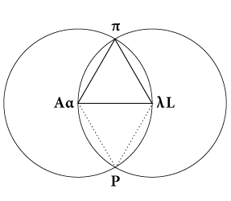

Coss? Cossist? Your parn! You, you make
what name? (and in truth, as a poor soul is
between shift and shift ere the teath he has
lived through becomes the life he is to die
into, he or he had albut—he was rickets as to
reasons but the balance of his minds was
stables—lost himself or himself some som-
nione sciupiones, soswhitchoverswetch had
he or he gazet, murphy come, murphy go,
murphy plant, murphy grow, a maryamyria-
meliamurphies, in the lazily eye of his lapis,

Vieus Von DVbLIn, ’twas one of dozedeams
a darkies ding in dewood) the Turnpike under
the Great Ulm (with Mearingstone in Fore
ground).1 Given now ann linch you take enn
all. Allow me! And, heaving alljawbreakical
expressions out of old Sare Isaac’s2 universal
of specious aristmystic unsaid, A is for Anna
like L is for liv. Aha hahah, Ante Ann you’re
apt to ape aunty annalive! Dawn gives rise.
Lo, lo, lives love! Eve takes fall. La, la, laugh
leaves alass! Aiaiaiai, Antiann, we’re last to
the lost, Loulou! Tis perfect. Now (lens
Uteralterance or
the Interplay of
Bones in the
Womb.
The Vortex.
Spring of Sprung
Verse. The Ver-
tex.
why my as
likewise
whis his.
293